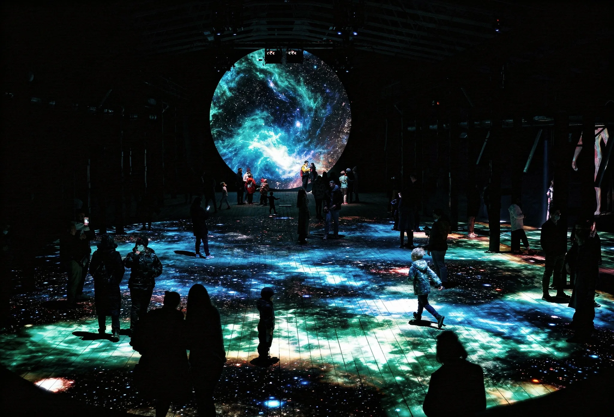
Арт-инсталляция на стыке космической науки и телесного опыта
EFEST 2021. Пространство 58 м², три проекционных круга на полу и восьмиметровый экран на стене — всё работало как единая интерактивная система.
В основе — физическое моделирование туманностей: межзвёздных облаков из газов, пыли и плазмы, которые рождаются из взрывов сверхновых. Инсталляция воспроизводила их динамику: структуры, плотность, поведение частиц.
Каждый посетитель притягивал или отталкивал частицы, накапливая вокруг себя поле. На финальном экране оно складывалось в силуэт конкретного человека — туманный аватар, существующий только здесь и сейчас.
Твоё тело становится частью туманности.
Nebula · EFEST 2021 · студия Hello I/O · смотреть на YouTube
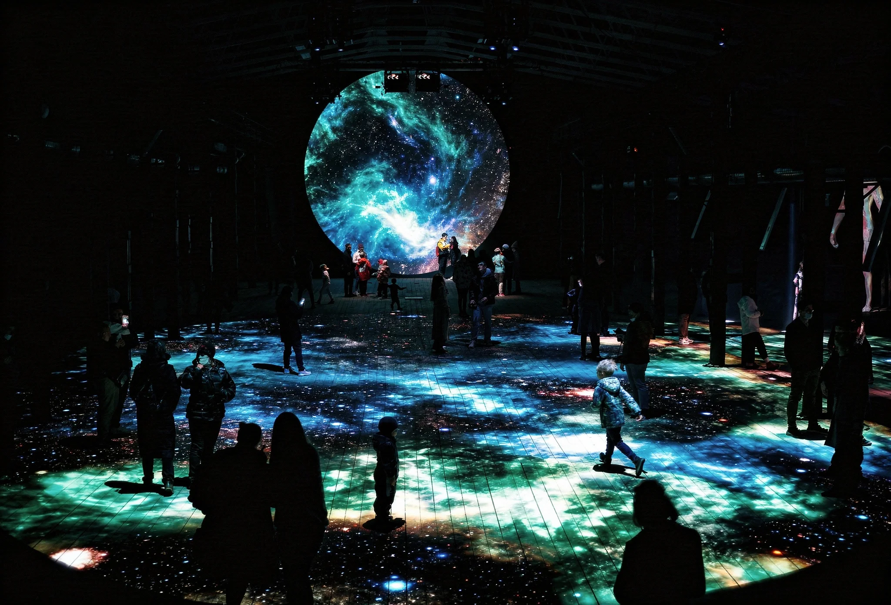
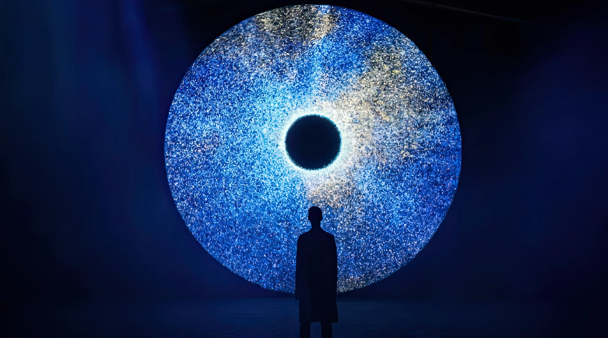
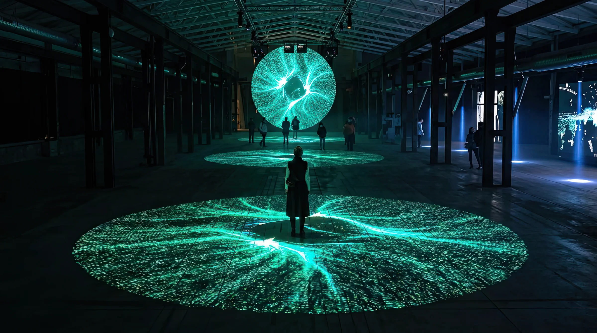
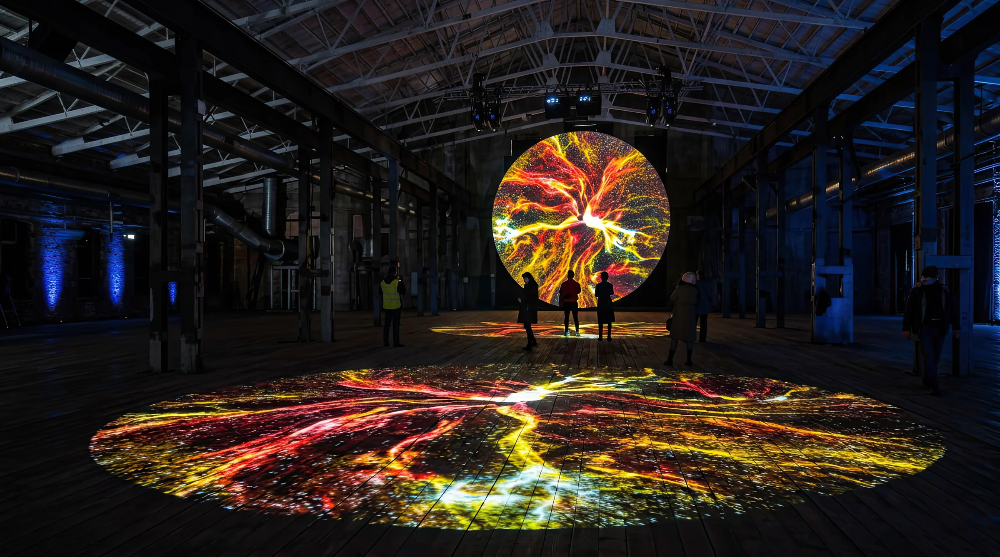
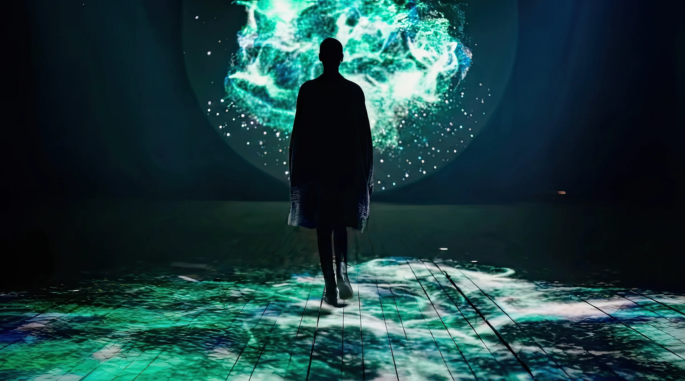
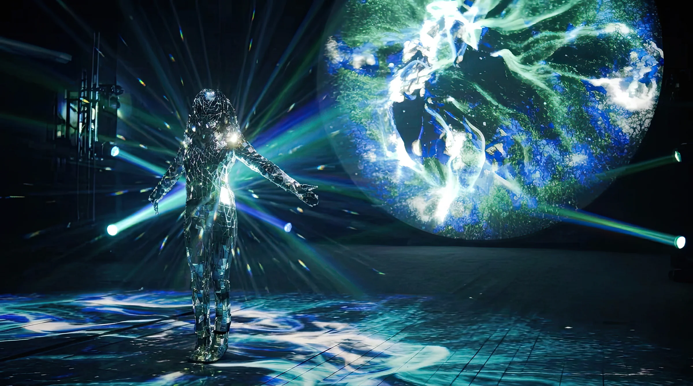
Шоу строилось как нарратив из трёх актов с двумя переходами — Образование туманности, Внутри туманности, Макрокосм. Каждый акт со своим визуальным языком, плотностью и эмоциональной температурой. Полный цикл около 20 минут.
Проекция на полу. Три круга диаметром 10 м — основная сцена взаимодействия. Здесь формировалось поле частиц вокруг каждого посетителя.
Вертикальный экран. Круг 8 м на стене — финальная трансформация. Накопленные частицы складывались в туманный аватар посетителя.
Интерактивность. Depth-камеры считывали движение тела и переводили физическое присутствие в визуальный отклик системы в реальном времени.
Разрозненные частицы медленно собираются в структуры. Посетители впервые замечают: каждый шаг меняет поведение поля вокруг них. Система начинает реагировать на присутствие.
Пространство наполнено. Вокруг каждого человека — своё уникальное поле частиц. Когда люди сближаются, поля пересекаются и реагируют друг на друга. Опыт из индивидуального становится общим.
Взрыв сверхновой. Частицы уходят на вертикальный экран. На стене возникают силуэты присутствующих — каждый превращается в туманного аватара. Присутствие конкретного человека становится частью космоса.
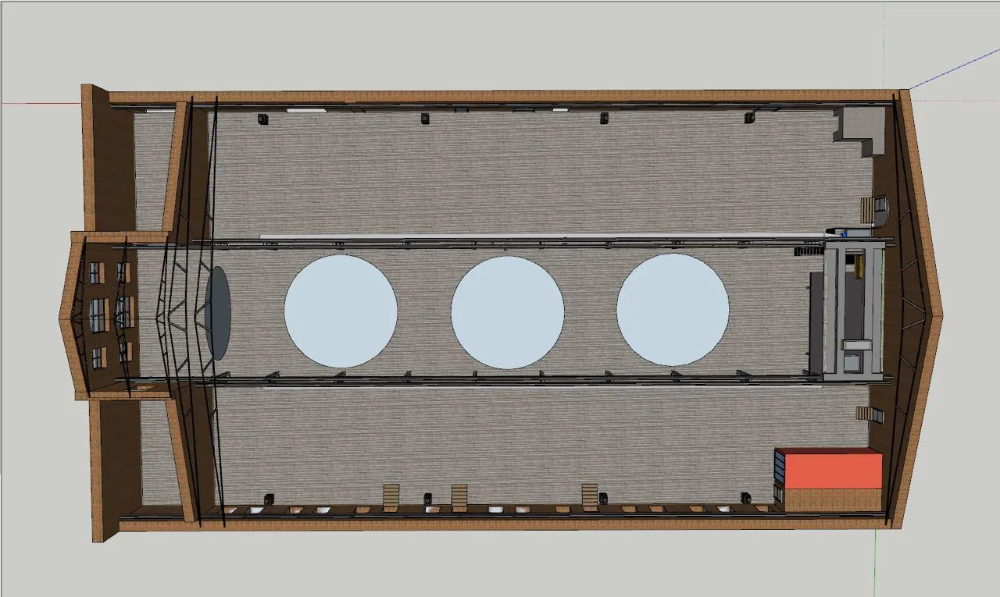
План зала · 3 круга + экран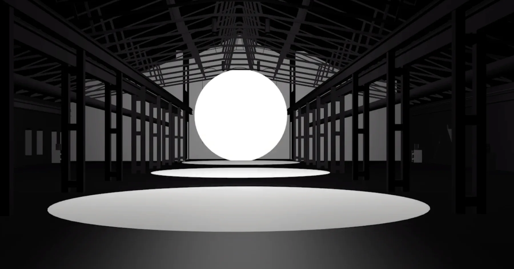
3D рендер пространства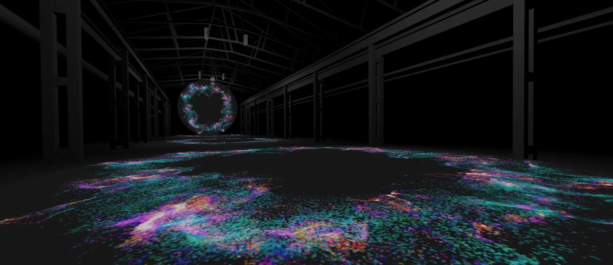
Итоговый рендер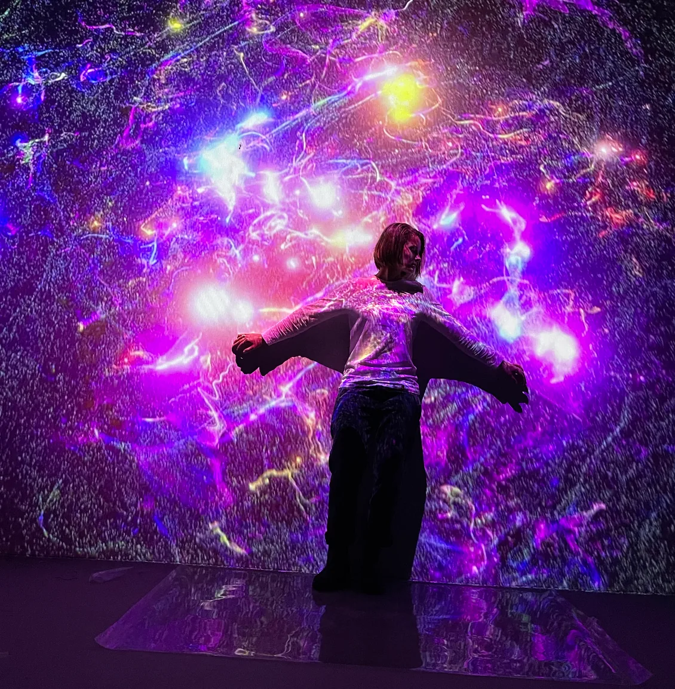
Фото-тест · образование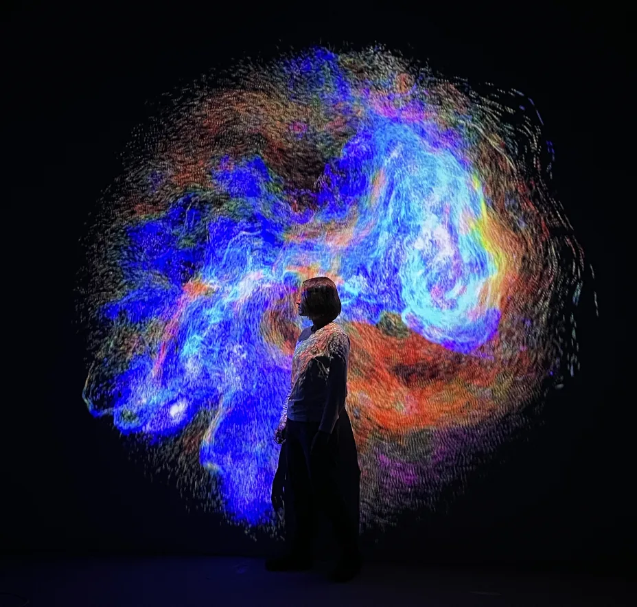
Фото-тест · взаимодействие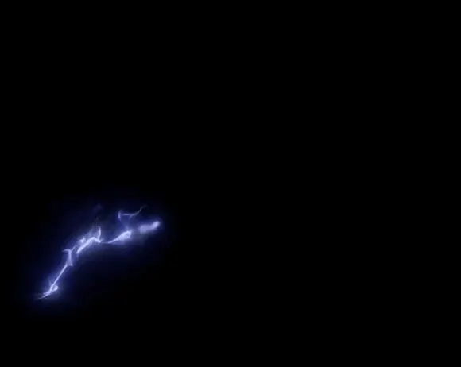
Эффект от пользователя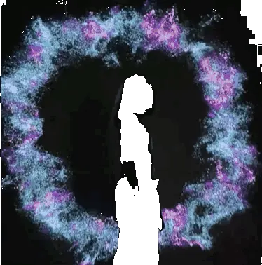
I · Образование туманности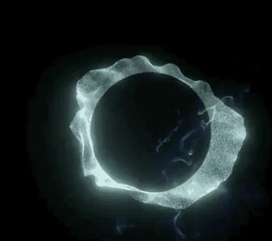
II · Внутри туманности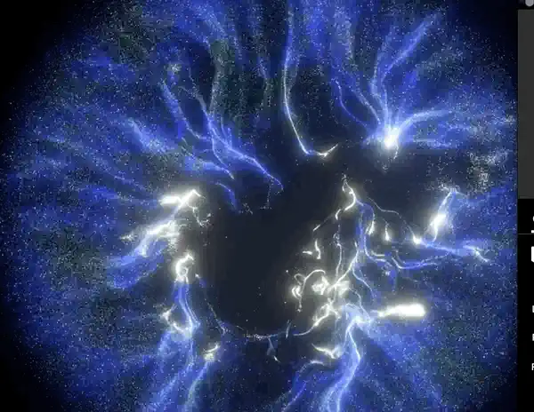
Полный цикл · визуальная системаNebula позволяла увидеть невероятной красоты туманности невооружённым глазом — и поучаствовать во взрыве сверхновой.
Nebula · EFEST